Cloud ?
Le Cloud est un terme générique qui regroupe de nombreuses plateformes, chacune avec ses contraintes techniques. Ainsi, quand on développe en mode Cloud, de nombreux éléments sont à prendre en compte.
Ne foncez pas tête baissée, surtout si c’est votre premier projet Cloud. Xebia vous aide à choisir la bonne plateforme pour faire face à vos problématiques et participent à la réalisation de vos projets.
Nous partageons généreusement notre savoir-faire au travers de notre blog, de publications et de conférences.
Nos offres
Lead technique

Architecture et développement
Assistance au Continuous Delivery